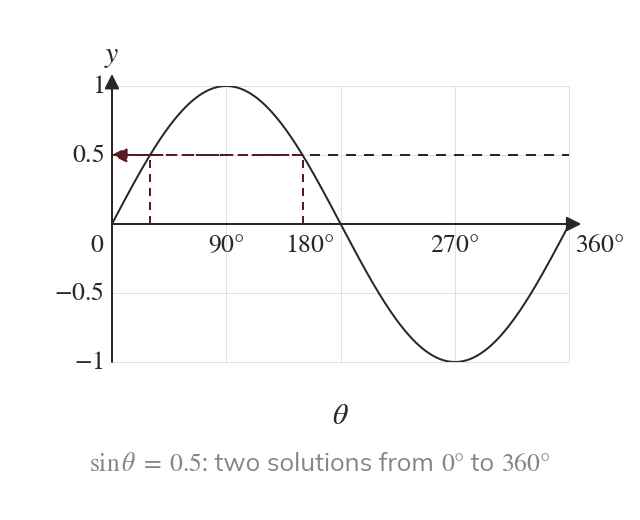
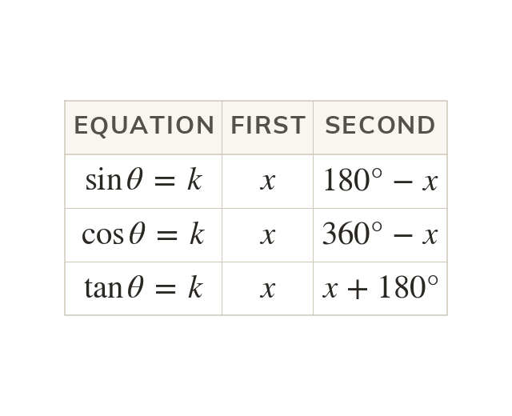
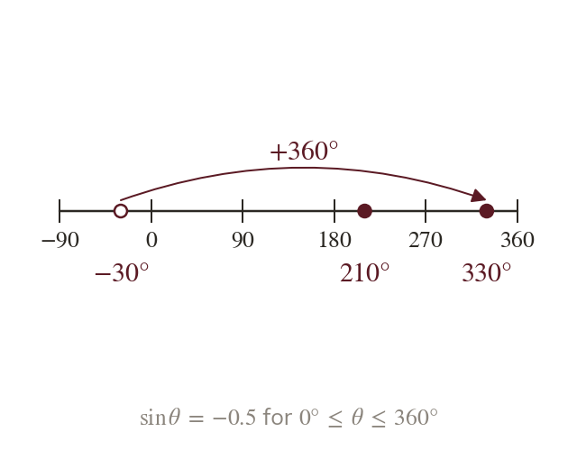
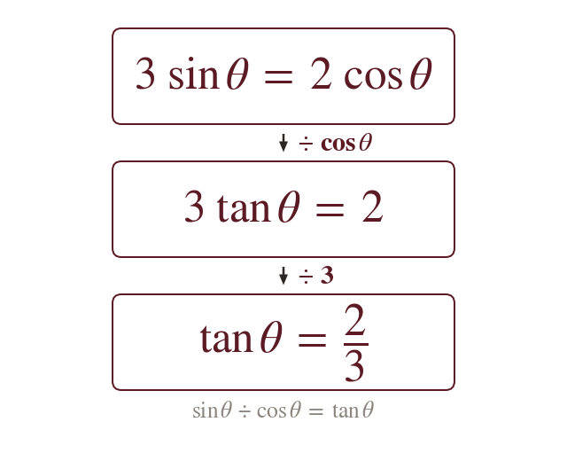
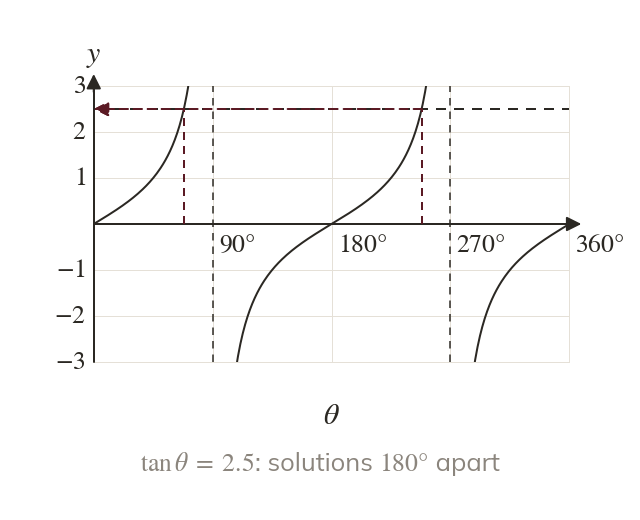

One value, many angles
The line meets the sine curve again and again, so has infinitely many solutions. The interval in the question says which of them to give.
Unlike a linear equation, has infinitely many solutions, so an exam always gives an interval and wants every solution in it. The calculator gives one, and the graph or CAST gives the rest. It is the method every harder equation in this chapter comes back to.
Work down the page at your own pace. Write every answer in your book first, then click to check it.
Read each card, then follow the worked examples one step at a time.

The line meets the sine curve again and again, so has infinitely many solutions. The interval in the question says which of them to give.

The calculator gives one solution, the principal value x. The symmetry of each graph gives the second.

A solution outside the interval is moved in by adding or subtracting A negative principal value usually needs this first.
Pick an answer. If it's wrong, the feedback tells you which mistake it was.
Read each card, then follow the worked examples one step at a time.

Since an equation with one term and one term becomes an equation in alone. Dividing both sides by does it.

The equation is now solved as before. Its second solution is after the first.
Pick an answer. If it's wrong, the feedback tells you which mistake it was.
Finished? Next lesson: 10.5 Harder Trigonometric Equations.
For each skill, tap the one that is true for you today. Your Revise pages start with anything you mark Not yet.
Your ratings are saved on this device only.
Log in, then search for a code to practise that skill.